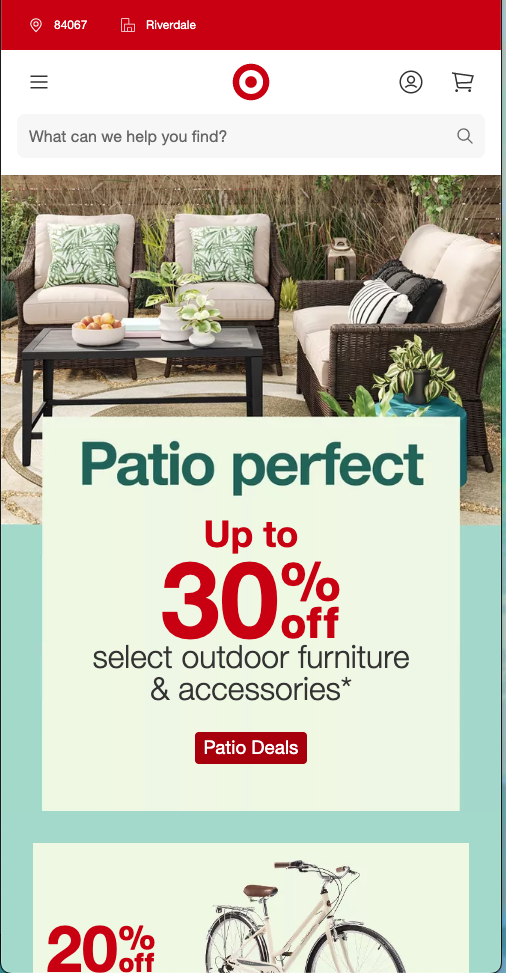

Design Principles Document
Eric Vaughn
Rule of Thirds: OC Tanner
octanner.comThe Rule of Thirds dictates balance in imagery and design. It explains that any design is split into three sections, and the placement of elements is key to maintaining balance. One might have their subject take up 2/3 of the screen with negative space in the next; or only 1/3 to convey a large space. The rule is open to interpretation with certain limitations (like crossing over boundaries).
In this hidden example, OC Tanner (a tech company) has chosen to place their logo on the left-side 2/3 sections fo the page, giving a sense of balance to the open space on the other third. You'll also note that there is a vertical rule of thirds at play here with the different sections displayed, giving a sense of hierarchy of what needs our attention more than other elements.
White Space & Clean Design: Apple
apple.comOne of the most powerful tools a designer has is white space, or negative space. Negative space allows you to take on the saying "a picture worth a thousand words" in a new way, as you utilize the space where there are no images at all.
Negative space creates breathing room where information can be ingested before taking on new content. A designer that knows how to use white/negative space knows less is more. Apple has been a leading example of white space and clean design over the past 2 decades, as they exemplify contrasting colors in open, white spaces.
Proximity: Target
target.com
Proximity directly relates to both the rule of thirds and white space, dictating how you should place content on a design so it makes sense and doesn't clutter. The worst thing you can do is to make things too spread out or too close together.
In this example, we see that Target has practiced healthy proximity principles to keep things in their own space, while providing hierarchy and interesting character. The text is within a good proximity to the images to show that they are related; the box elements are close together to show they are part of the same campaign (and likewise with buttons).
Things are properly placed to show they have a relationship while still keeping a good distance so you are not overwhemled. Proximity is often where designers make or break their projects, for better or for worse.